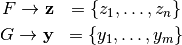
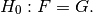
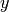
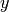
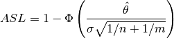
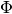
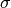
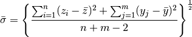
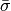

Permutation Test¶
Permutation tests are a group of nonparametric statistics. Here we use a permutation test to test the null hypothesis that two different groups come from the same distribution. The notation and examples shown here are borrowed from Efron and Tibshirani’s An Introduction to the Bootstrap [1]. Our specific problem is that we observe two groups of data

and we are interested in testing the null hypothesis that

Data¶
In the case of this example the following data are survival times for treatment  and control  groups.
and control  groups.
>>> import numpy as np
>>> z = np.array([94,197,16,38,99,141,23])
>>> y = np.array([52,104,146,10,51,30,40,27,46])
We note that the difference among the means hints that the treatment group may have longer survival times in general.
>>> theta_hat = z.mean() - y.mean()
>>> print theta_hat
30.6349206349
Here we run the permutation test
>>> def run_permutation_test(pooled,sizeZ,sizeY,delta):
... np.random.shuffle(pooled)
... starZ = pooled[:sizeZ]
... starY = pooled[-sizeY:]
... return starZ.mean() - starY.mean()
...
>>> pooled = np.hstack([z,y])
>>> delta = z.mean() - y.mean()
>>> numSamples = 10000
>>> estimates = map(lambda x: run_permutation_test(pooled,z.size,y.size,delta),range(numSamples))
>>> estimates = np.array(estimates)
>>> diffCount = len(np.where(estimates <=delta)[0])
>>> hat_asl_perm = 1.0 - (float(diffCount)/float(numSamples))
>>> hat_asl_perm
0.14070000000000005
and we fail to reject the null hypothesis.
Further Notes¶
An alternative way to analyze these data is to use normal theory and assume that both underlying distributions are Gaussian. We can then calculate the achieved significance level ASL as

where  is the standard normal cdf. Because  is unknown we can use

>>> sigma_bar = np.sqrt((np.sum((z-z.mean())**2) + np.sum((y-y.mean())**2)) / (z.size + y.size - 2.0))
>>> sigma_bar
54.235210425392665
such that
>>> import scipy.stats as stats
>>> 1.0 - stats.norm.cdf(theta_hat / (sigma_bar * np.sqrt((1.0/z.size)+(1.0/y.size))))
0.13117683784495782
Instead of estimating the variance with , a fixed constant, we can use Student’s t-test.
>>> 1.0 - stats.t.cdf(theta_hat / (sigma_bar * np.sqrt((1.0/z.size)+(1.0/y.size))),14)
0.1406062923976501
In both cases we fail to reject the null.
Bibliographic notes¶
- Efron, Bradley and Tibshirani, R. J., An Introduction to the Bootstrap,Chapman & Hall/CRC Monographs on Statistics & Applied Probability, 1994.